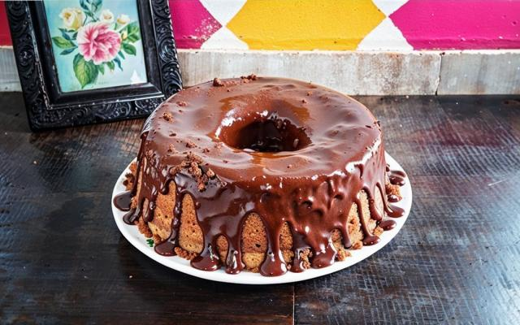

essa receita é prática e não precisa de batedeira, sendo feita no liquidificador. Para garantir que o bolo de chocolate cresça e fique macio como a gente gosta, é importante que a gente respeite o tempo de bater a massa no eletrodoméstico indicado na receita.
Massa
Calda